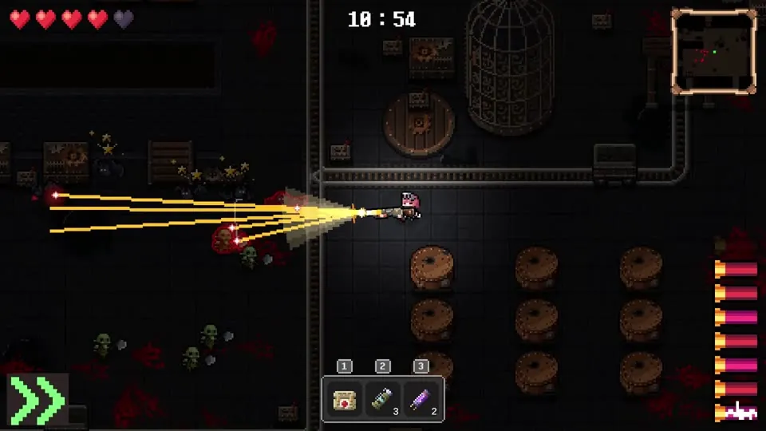

프로그래밍
FSM · 싱글톤 · 컴포넌트 기반 설계 · 이벤트 드리븐 아키텍처 · 권위 서버 모델
컴퓨터공학 전공으로 시스템의 구조를 직접 구상하고, 왜 그렇게 정했는지와 무엇을 아직 검증하지 못했는지까지 기록합니다. 팀 프로젝트에서는 PM과 기획을, 개인 프로젝트에서는 설계와 구현을 맡았습니다.
수원대학교 미디어SW 전공으로, 게임 및 영상 일러스트 콘텐츠를 직접 만들어 왔습니다.
만들 것을 기획하는 사람과 구현하는 사람 사이의 번역 비용을, 양쪽을 다 할 줄 아는 방식으로 줄입니다. 다양한 시각으로 프로젝트를 바라보고 새롭게 도전합니다.
FSM · 싱글톤 · 컴포넌트 기반 설계 · 이벤트 드리븐 아키텍처 · 권위 서버 모델
기획 · 촬영 · 편집 전 과정 단독 수행
카드를 누르면 프로젝트 소개와 제가 내린 판단의 기록을 볼 수 있습니다. 태그는 그 프로젝트에서 맡은 일입니다.

2D 탑다운 익스트랙션 슈터. 4인 팀에서 PM과 전체 기획을 맡아 시간 제한, 습격 구조, 맵 구조를 설계했습니다.

증강 카드 55종을 얹은 2인 대전 보드게임. 웹에서 룰을 검증한 뒤 Unity 3D로 이식 중입니다.
매일 같은 50키 시퀀스로 겨루는 반응속도 랭킹 웹 미니게임.

컴포넌트 기반 FSM과 물리 레이어 격리를 구조의 중심에 둔 졸업 프로젝트.